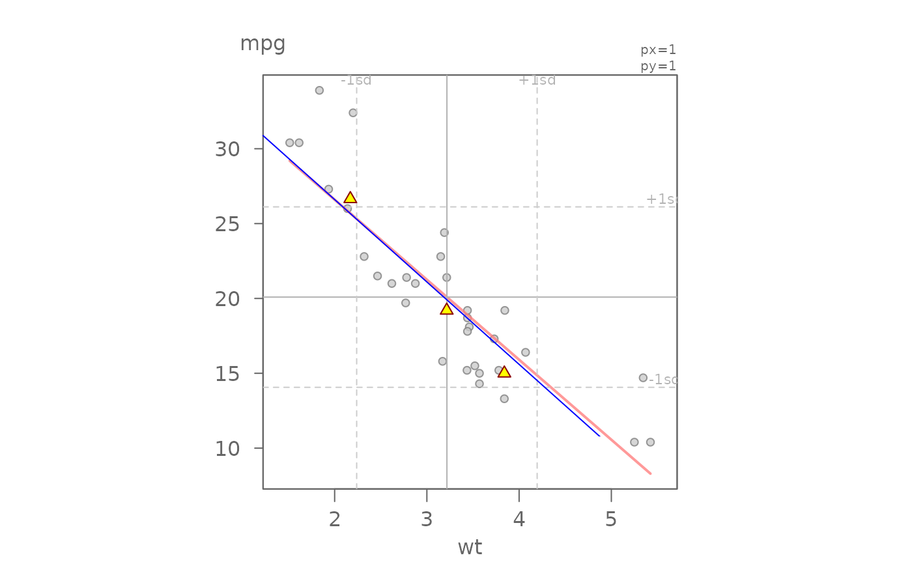

eda_add adds graphical EDA elements to a scatter plot.
Currently only adds eda_rline fit and points.
Usage
eda_add(
x,
pch = 24,
p.col = "darkred",
p.fill = "yellow",
lty = 1,
l.col = "darkred"
)
Arguments
- x
Object of class eda_rline
- pch
Point symbol type
- p.col
Point color passed to col
- p.fill
Point fill color passed to bg (Only used for pch
ranging from 21-25)
- lty
Line type
- l.col
Line color
Value
Returns the eda_rline intercept and slope.
Details
This function adds an eda_rline slope and 3-pt summary points to an
existing scatter plot.
See the accompanying vignette Resistant Line for a detailed
breakdown of the resistant line technique.
Examples
eda_lm(mtcars, x = wt, y = mpg)
#> int wt^1
#> 37.285126 -5.344472
Mr <- eda_rline(mtcars, x=wt, y=mpg)
eda_add(Mr, l.col = "blue")

#> $a
#> [1] 37.61522
#>
#> $b
#> [1] -5.504814
#>